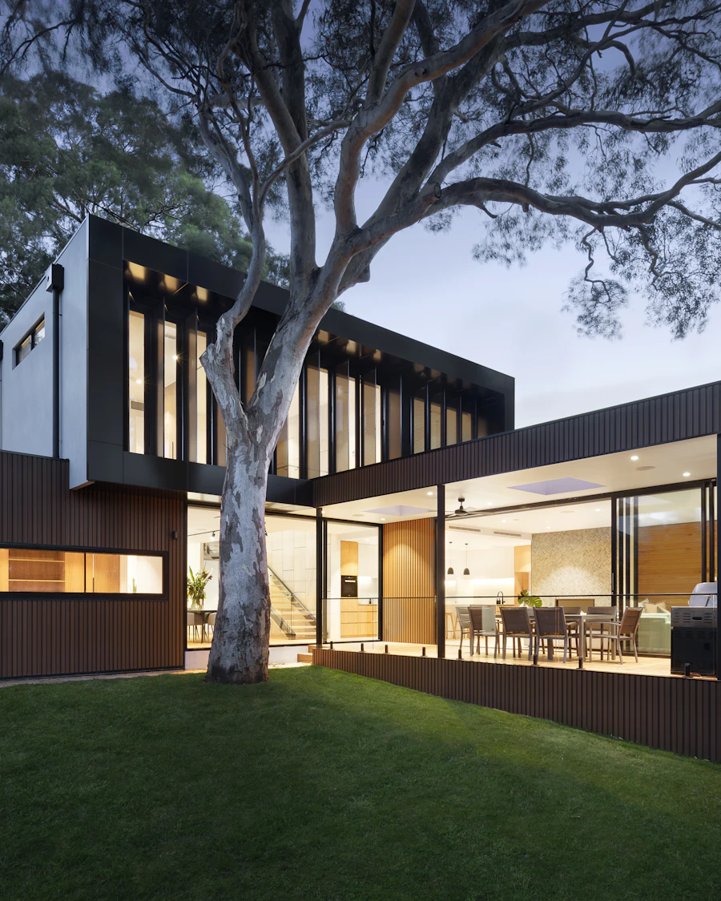

COTAZERO

Tudo começa na cota zero. Arquitetura medida a partir do que já existe: o muro, o terreno, a luz e o tempo de obra. Do Porto para todo o país.
A estrutura
é o ornamento.
A Cota Zero é um atelier de arquitetura fundado no Porto em 2011. Trabalhamos entre a reabilitação e a obra nova, com uma regra simples: nada entra no desenho que não possa ser medido, construído e mantido.
Começamos sempre pelo levantamento. O muro que já existe, a cota do pavimento, o vão que não se pode perder e o orçamento real definem a forma antes de qualquer imagem. O resto é ofício: betão, pedra, madeira e aço, escolhidos pela espessura e pelo tempo que duram.
Seis obras.
Uma cota.
Seleção do índice: habitação, reabilitação, equipamento público e interiores. Todas as fichas incluem planta, corte, alçado e memória de obra.
Medido,
não estimado.
Área bruta de intervenção, obra construída e em curso. Números fechados a 30 de setembro de 2026.
Cinco fases.
Zero atalhos.
Do primeiro levantamento ao caderno de obra. Cada fase entrega um documento verificável — não uma apresentação.
a cota. 02 · PlantaSemanas 04—10 Depois
a forma. 03 · CorteSemanas 08—14 Cada camada
conta. 04 · AlçadoSemanas 12—18 A fachada
mostra-se. 05 · ObraSemanas 18—52 O desenho
fecha.
Seis
lugares.
Do Gerês ao Porto, de Melgaço a Amarante. Cada ponto é uma obra e uma cota de terreno. Clique no número para abrir a ficha; a tabela completa tem filtros por tipologia, ano e estado.
Tem um terreno?
Comece pela cota.
Conte-nos o que existe: morada, área aproximada, uso previsto e prazo. Respondemos em 3 dias úteis com os próximos passos.